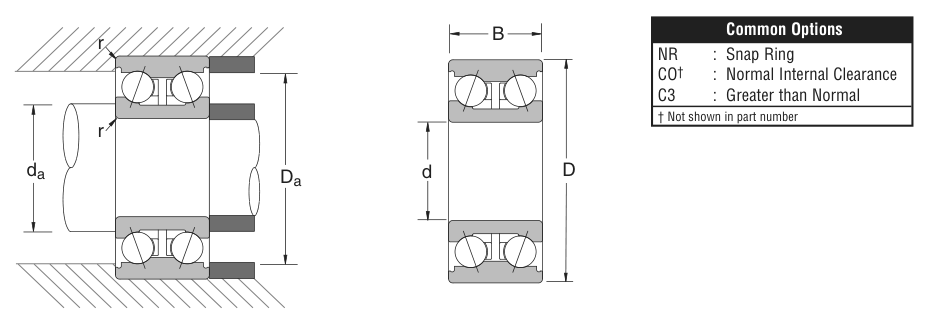

Original catalogue drawing - NSK catalogue, page 31

Scanned from the manufacturer catalogue page listing this part number. All part numbers printed on that table share the same drawing.
Scale cross-section
Blue = inner / outer ring, yellow = rolling element. Drawn to scale from this part's own
dimensions for selection reference only - not a manufacturing or assembly drawing.
Dimension table (mm / inch)
Symbol
Dimension
mm
inch
d
Bore diameter
25
0.9843
D
Outside diameter
62
2.4409
B
Inner-ring / bearing width
25.4
1
r
Chamfer (min)
0.991
0.039
Notes
Weights are given in kg. Load ratings are shown in both the original catalogue units and the converted value (1 N = 0.2248 lbf). Data is provided for selection reference only - confirm against the latest official catalogue before ordering.
Main dimensions
Bore d (mm)
25
Bore d (in)
0.9843
Outside dia. D (mm)
62
Outside dia. D (in)
2.4409
Width B (mm)
25.4
Width B (in)
1.0000
Load ratings & speeds
Basic dynamic load rating Cr (lbs)
6320
Basic static load rating Cor (lbs)
5150
Limiting speed - grease (rpm)
7,500
Limiting speed - oil (rpm)
10,000
Weight
Weight (kg)
0.367
Mounting dimensions (fillets / shoulders)
Chamfer r (in)
0.039
Shaft shoulder da min (in)
1.209
Housing shoulder Da max (in)
2.145
Bearing life (ISO 281 basic rating life)
C / P
Equivalent load P (N)
L10 (106 rev)
L10h at 2,500 rpm
4
7,028
64
427
6
4,685
216
1,440
8
3,514
512
3,413
10
2,811
1,000
6,667
15
1,874
3,375
22,500
Basic rating life per ISO 281: L10 = (C/P)3 with C = 28,113 N. Hours = L10 x 106 / (60n). Life-modification factors for lubrication, contamination and temperature (aISO) are not included.
Source & traceability
Brand
NSK
Source catalogue
NSK inch product catalogue
Catalogue page
p.33 (dimensions) / p.34 (ratings)
Dimensions in inches and millimetres, load ratings in lbs.
Send us the quantity you need and we will come back with price and
lead time, normally within 24 hours. Equivalent parts from other brands can be quoted at the same time.